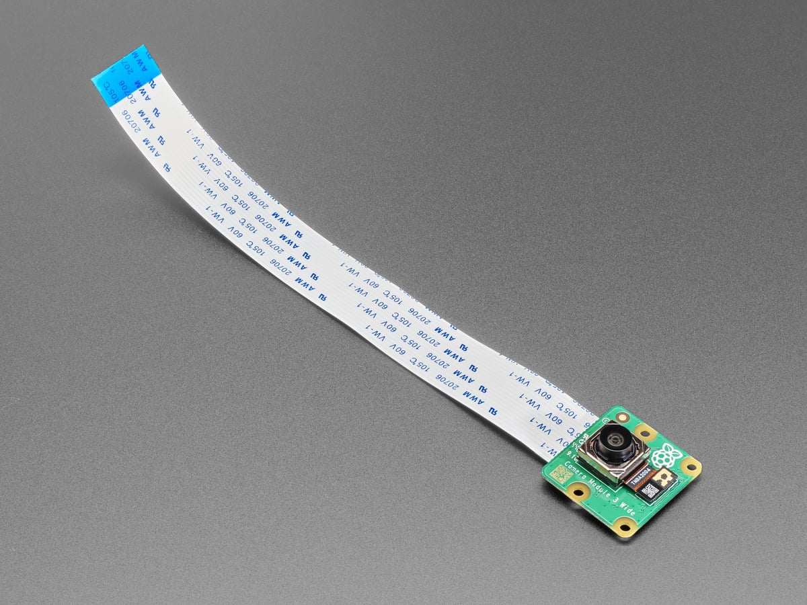
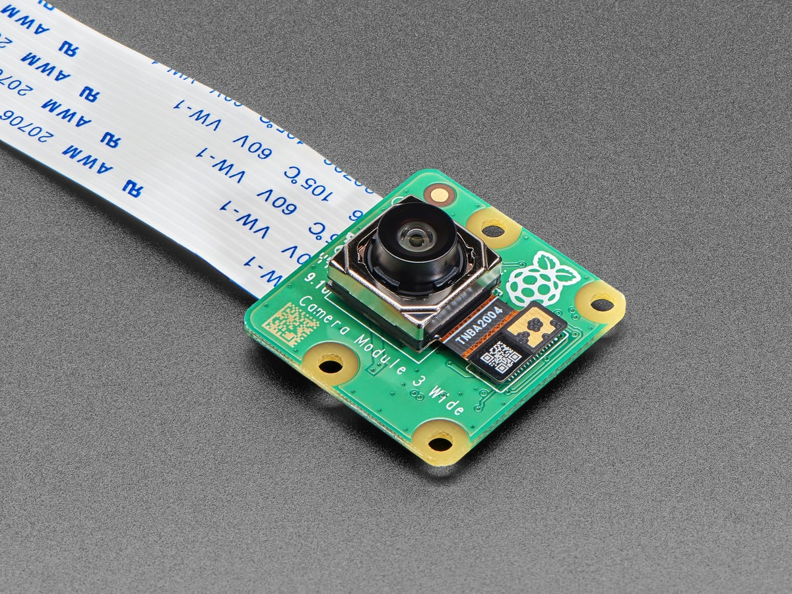
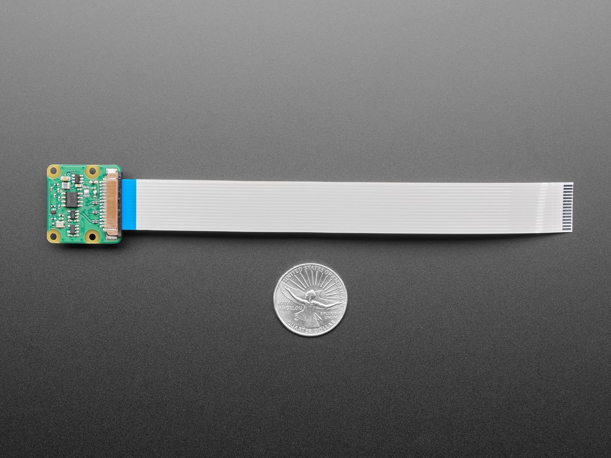
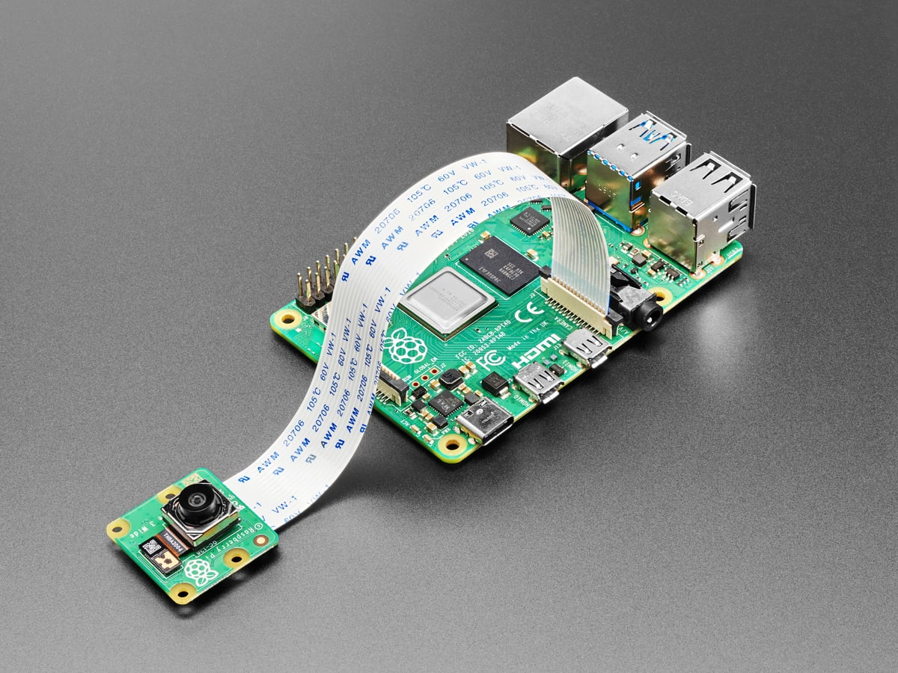

Home / Camera Modules / Raspberry Pi Camera Module 3 Wide
Camera Modules · Visual CSI · Wide
Raspberry Pi Camera Module 3 Wide
$89 ships from us after payment
- 12 MP visible CSI module — 120° lens, autofocus. Not thermal
- 200 mm 15-pin ribbon in the box
- A Raspberry Pi 5 needs a 22-pin to 15-pin adapter (about $3, not in this order)
- Visible CSI camera for a Raspberry Pi kit
Sold by Dark Sky Systems LLC. Card via Stripe.